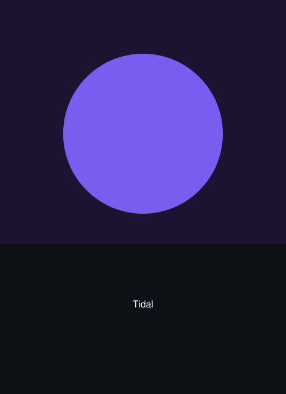

TidalSeason two
Tidal
The estuary town has three weeks to decide whether to raise the wall or move the harbour. Episode five is broadcast live tonight at 21:00 and stays available afterwards.
Continue watching
New this week
Because you watched The Harbourmaster
More like this
Still loading — this row shows what a placeholder looks like.